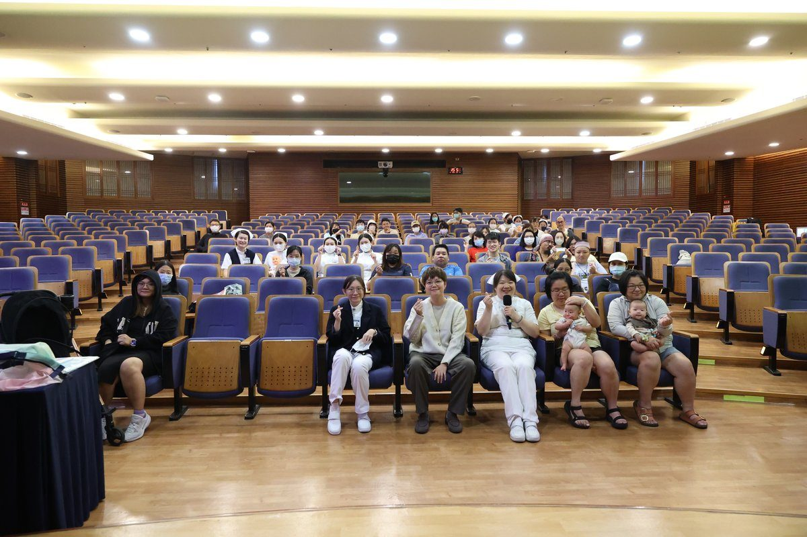

待產不只媽媽忙 花蓮慈院爸媽教室培養神隊友

可樂電子報小編/編輯
從產兆辨識、待產舒緩到嬰幼兒緊急救命術，都是準爸媽迎接新生命的重要課題。花蓮慈濟醫院舉辦「爸媽教室」，邀請婦產科病房護理長高晴吟、護兒中心護理師鄭螢共同授課，以衛教講解與實際操作，帶著準爸媽學習實用的孕產及育兒知識，也讓陪產的伴侶知道自己在產程中能做些什麼，為迎接新生命提前做好準備。

「什麼時候該到醫院待產？」是許多準爸媽關心的問題。高晴吟護理長指出，掌握產兆與入院時機，有助於減少臨產前的不安。初產婦可參考「511」口訣，也就是每5分鐘宮縮1次、每次持續1分鐘，且規則持續達1小時；經產婦因產程可能較快，宮縮約每7至10分鐘一次、每次持續1分鐘，規則持續達1小時即可前往醫院評估。她也提醒，若出現大量出血或疑似破水，應立即就醫，不必等待規則宮縮。

除了辨識產兆，待產期間的舒緩技巧同樣重要。透過「撫摸按摩法」，準爸爸輕柔按摩產婦的肩頸及腰背部，能協助舒緩孕媽咪的不適；高晴吟也介紹「待產之舞」，由產婦倚靠伴侶，搭配音樂輕輕擺動骨盆，在身體的律動和家人的陪伴下，能有效減輕待產時的緊張與不適。這些方法不需要特殊器材，在家就能先練習，等到產兆出現時更能派上用場。

順利生產後，育兒安全同樣不容忽視。護兒中心護理師鄭螢提醒，嬰幼兒因呼吸道較狹窄，進食異物梗塞、睡眠環境不安全或洗澡時意外溺水，都可能危及生命。當一歲以下嬰兒發生嚴重異物梗塞且仍有意識時，可交替進行5次背部拍擊與5次胸部推擠，切勿盲目伸手挖取異物；若失去反應，應立即呼救、撥打119並依急救指引施行心肺復甦術（CPR）。

急救時的胸外按壓頻率為每分鐘100至120次，深度約為胸部前後徑的三分之一。鄭螢表示，家長可透過兒歌《鯊魚歌》的節奏幫助記憶，讓自己在緊急時刻能冷靜、及時應變。她也提醒，家中應避免讓嬰兒睡在過軟的床面或堆放過多寢具，洗澡時全程有人看顧，從環境著手降低意外發生的機會。
參與課程的家長們表示，「課程學到的知識，讓我比較不會焦慮了」、「落紅及破水的辨識對第一胎產婦相當實用。」從懷孕後期到寶寶出生後的第一年，家長面對的狀況往往來得又快又急，事前多一分準備，就能少一分慌張。透過爸媽教室的推廣，不僅建立滿滿的「產」識，更讓準爸爸成為待產過程中的重要支持者及神隊友，陪伴準媽媽以更安心的心情迎接新生命。
🌟 掌握花蓮在地第一手資訊・歡迎訂閱追蹤
深度紀實報導、在地精采影音專題，第一時間接收最新消息！